Docfd User Guide
Installation
Docfd is primarily distributed as statically linked binaries via GitHub Releases
Refer to the Installation section for other distribution channels.
Getting Started
We will use the Docfd Engineering pages of this GitHub site for this walkthrough, which can be cloned by:
$ git clone https://github.com/darrenldl/darrenldl.github.io.gitBut feel free to use any local directory as Docfd is fully offline and does not modify or move your documents.
Startup
$ cd darrenldl.github.io/
$ docfd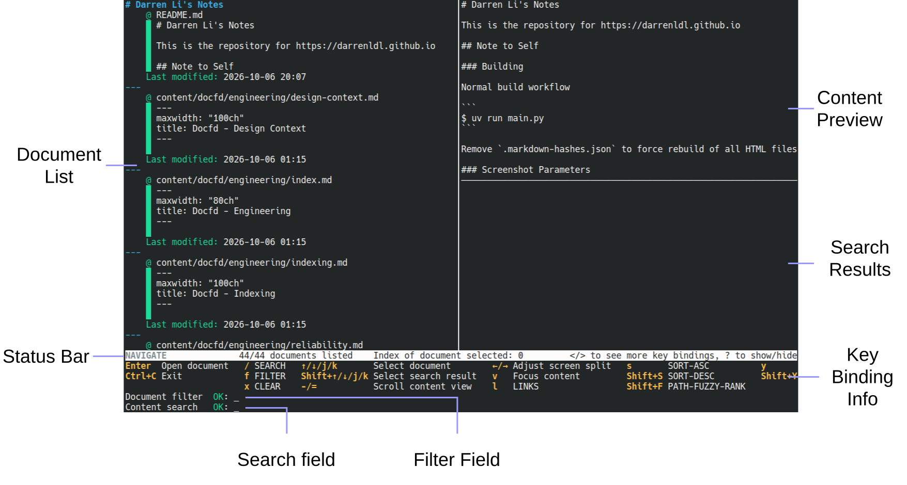
Useful tip about looking up key bindings:
- Press
<or>to rotate the key binding info grid. - Generally the most commonly used key bindings are put closer to the left side of the grid.
Filtering
Steps:
- Type
fto enter FILTER mode - Type
pand press Tab to autocomplete topath-
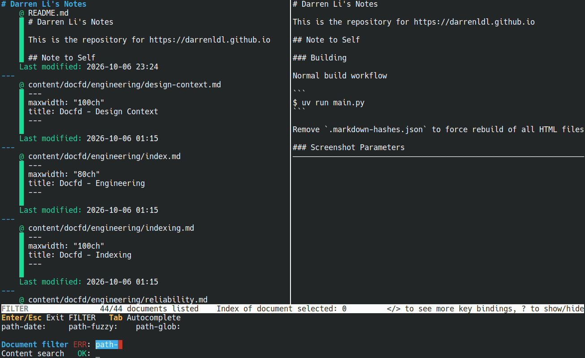
- Type
fand press Tab to autocomplete topath-fuzzy:as a whole
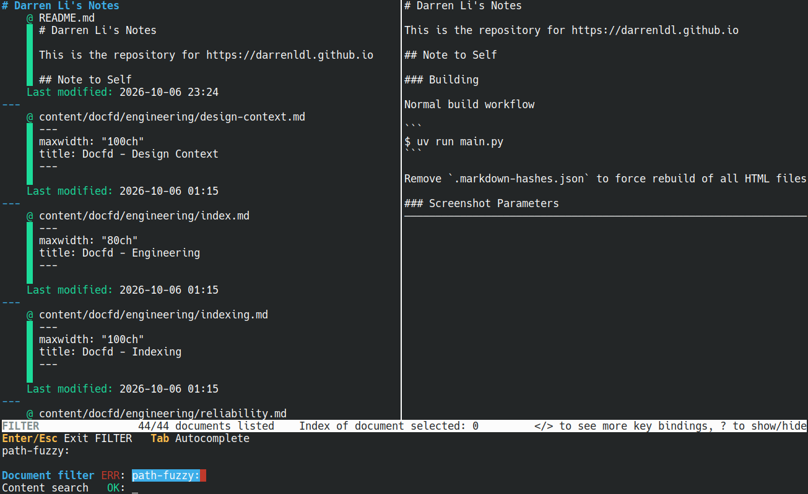
Type
"content engineering"to complete the full string topath-fuzzy:"content engineering"Press Enter to exit FILTER mode
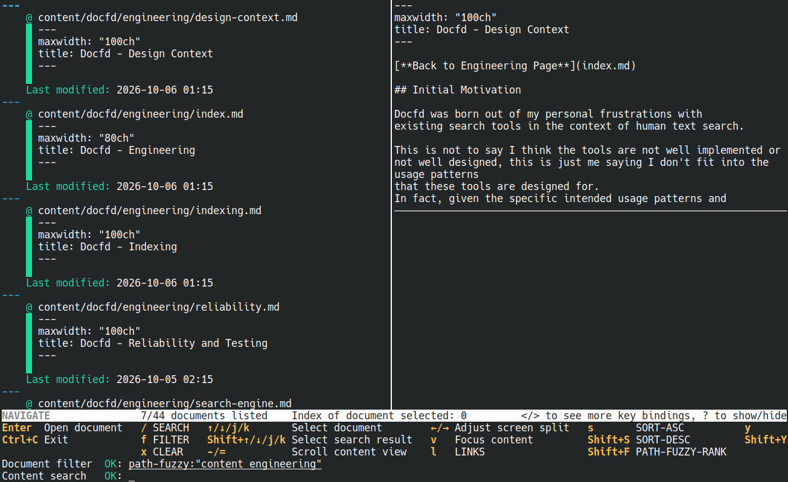
Dropping
To keep the UI less cluttered, it’s often useful to “clear the table” and just focus on the documents at hand with input fields ready for new filter or search criteria.
Steps:
- Type
dto enter DROP mode
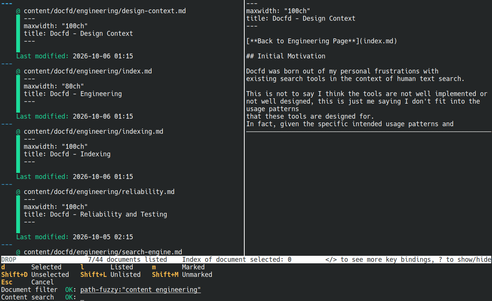
- Type
Shift+Lto drop the unlisted documents (documents that do not match the filter and search criteria). In this specific case, we saw7/44 documents listedon the status bar prior, that means we will be dropping 37 documents. After which the status bar should read7/7 documents listed. - Type
xfto clear the filter field now that we don’t need to keep seeing the filter expression.
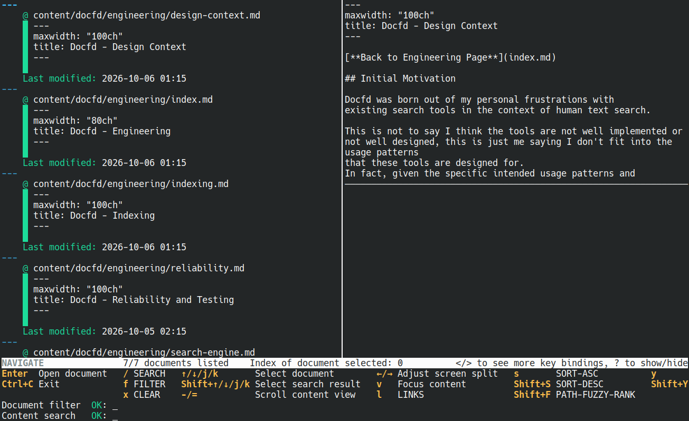
Searching
Steps:
- Type
/to enter SEARCH mode - Type
search engine. - Press Enter to submit and exit SEARCH mode. Note that since Docfd is “search as you type”, a lot of the times the search is already done by the time you hit Enter.
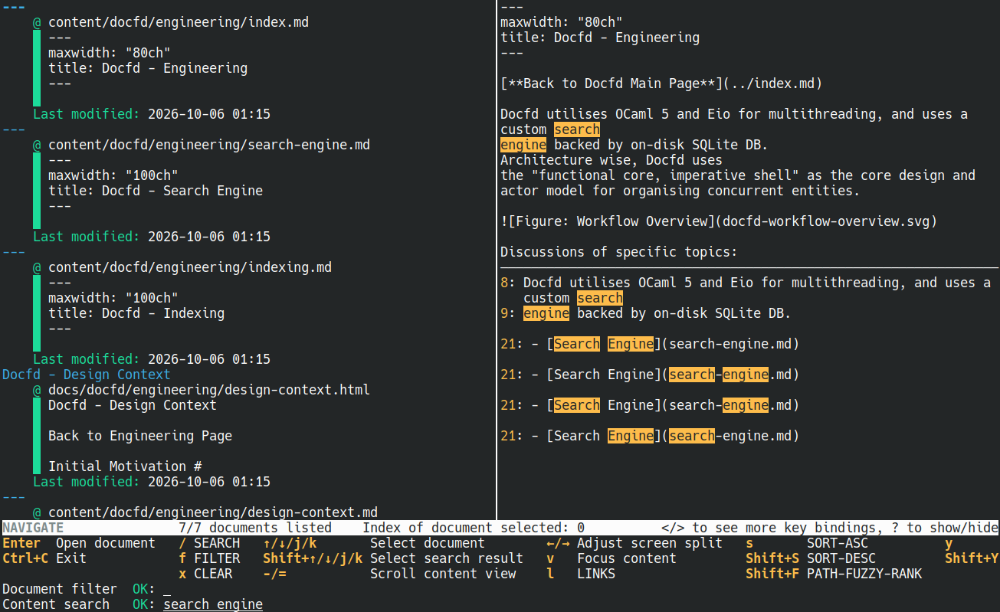
- Use
Shift+j/kor up/down to select a search result within a document. - Use
j/kor up/down to select a document.
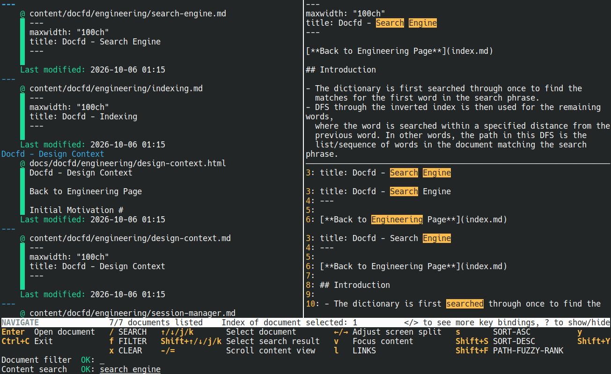
- Press Enter to open the search result in editor. Docfd recognises
common text editors from
$VISUALor$EDITOR, and invokes the editor with the line number to open to when possible.
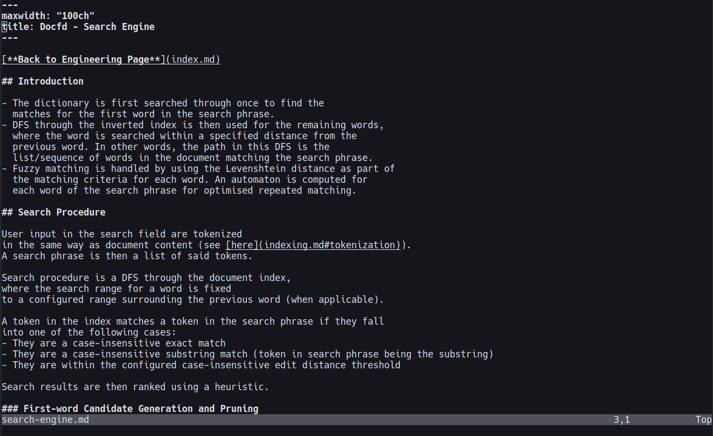
Undo/redo
Steps:
- Type
uorCtrl+Zto undo - Type
Ctrl+RorCtrl+Yto redo
Note that as Docfd only stores a limited number of session snapshots at a time, sometimes undoing or redoing requires recomputation of search or filter results and can take a bit longer.
Editing Command History
If you want to undo in bulk, add new actions, or just look at the actions done in the session thus far, you can make use of the command history editing functionality.
Steps:
- Type
hto bring up the session command history into the editor.
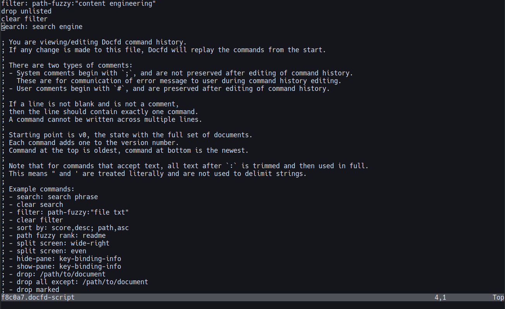
- Remove or add commands as desired, and upon saving Docfd will
recompute the session based on the revised history. In this case we
change our filter query to be
path-fuzzy:"search engine"and our search query to besearch: depthinstead.
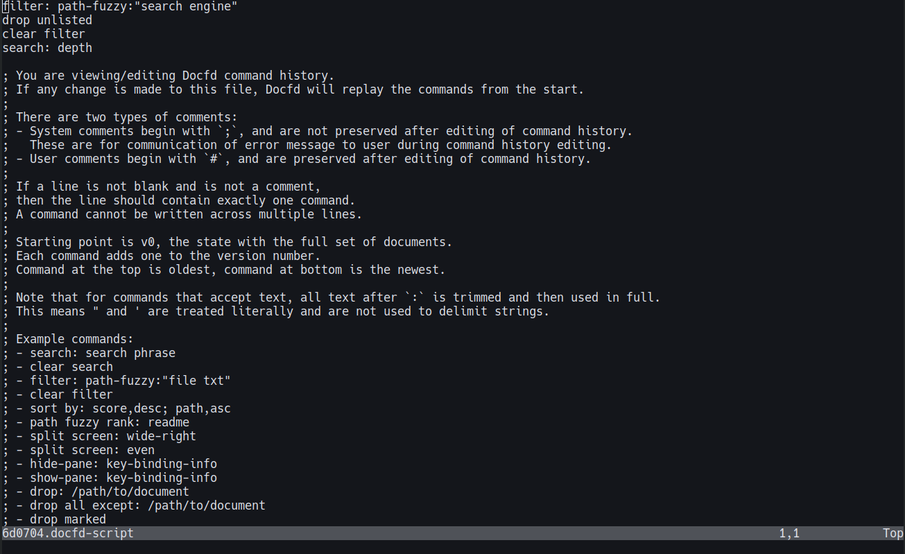
- Save and exit the editor, Docfd should now display the newest session state according to the new version of session history.
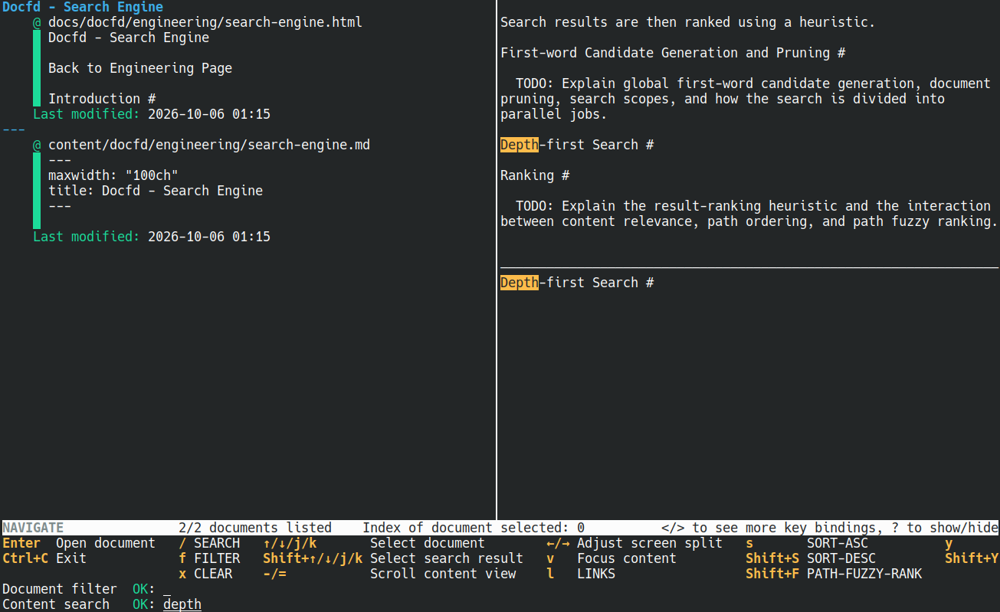
- If Docfd fails to parse any line, you would be brought back to the
editor (similar to
git rebase -i), where the problematic line would be followed by# Failed to parse the above command.
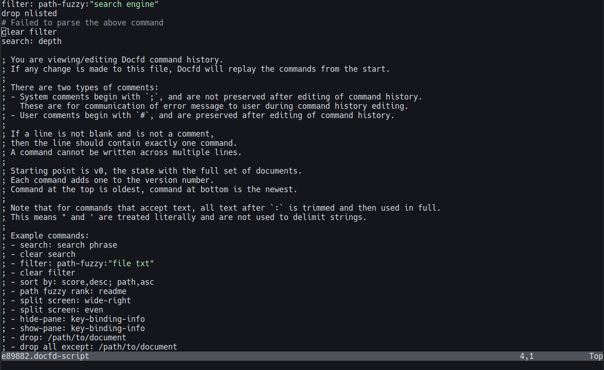
What to Try Next
Docfd Script
If you often repeat some search or repeat some starting steps for a particular project, you may find the scripting capability handy. Docfd script follows the same format as the command history
Steps to save a script:
- Type
Ctrl+S
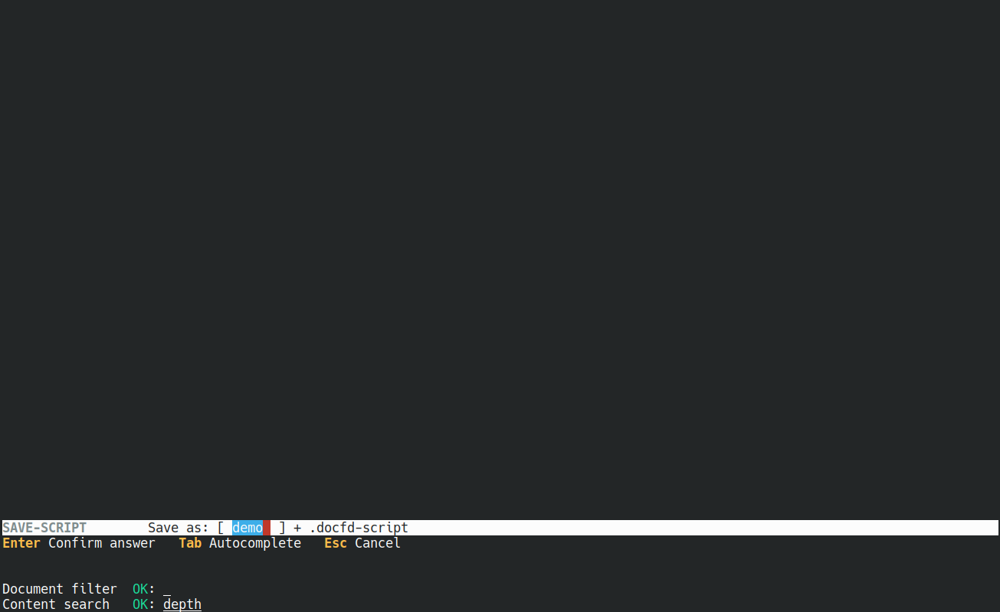
Steps to open a script:
- Type
Ctrl+O
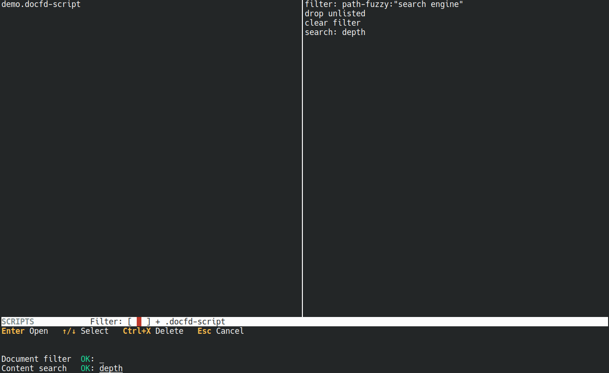
Steps to delete a script:
- Type
Ctrl+O - Type
Ctrl+X
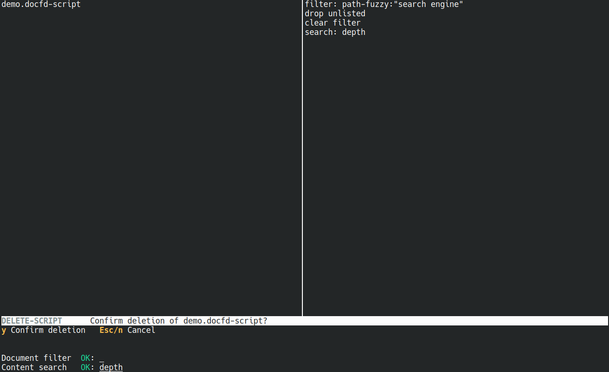
Common Cli Arguments
Here we list some common cli arguments that you may find useful.
Limit to just specific extensions, e.g. .md,
.txt:
docfd --exts md,txt
Add onto the default list of extensions, e.g. .js:
docfd --add-exts js
Scan by globbing:
docfd --glob 'content/**'
Use list of paths from other programs, e.g. fd:
fd | docfd --paths-from -
Config File
Location
Docfd looks up the config file in the following order:
- If
--config FILEwas provided as a cli argument, thenFILEis used - Closest
.docfd-config(scanning from current directory up to root directory) - Home directory config
$XDG_CONFIG_HOME/docfd/config(Linux) or$HOME/Library/Application Support/docfd/config
Note that only one config file is picked, i.e. there is no merging of cli arguments from multiple config files.
Typical usage would be a .docfd-config at the project
root for project specific configurations.
Format
Docfd config file uses the “one cli argument per line” format. For instance, if we are to store one of the examples from previous section into a config file, we would have:
--exts
md,txtor
--exts=md,txtTroubleshooting
Debug Log
You can enable debug log via:
$ docfd --debug-log FILEwhere FILE is the log file for Docfd to output to.
When you might need this:
- Docfd gets stuck when indexing some files and you want to narrow down the files.
- You want to check which config file Docfd is loading exactly.
Note that the debug log is not very structured as it’s only intended for ad hoc diagnostics.
Cache Directory Location
You can find the cache directory location in the help message:
$ docfd --help=plain | grep -- --cache-dirWhen you might need this:
- You may need to navigate to this location to clear Docfd index DB during some version upgrades (CHANGELOG will note explicitly in this case).
- Docfd index DB becomes corrupted and causes Docfd to freeze. Though this should be unlikely as there are already precautions in place, e.g. careful ordering of writes to ensure consistency and use of SQLite transactions.
Data Directory Location
You can find the data directory location in the help message:
$ docfd --help=plain | grep -- --data-dirWhen you might need this:
- You may need to navigate to this location to back up your Docfd scripts, for instance.